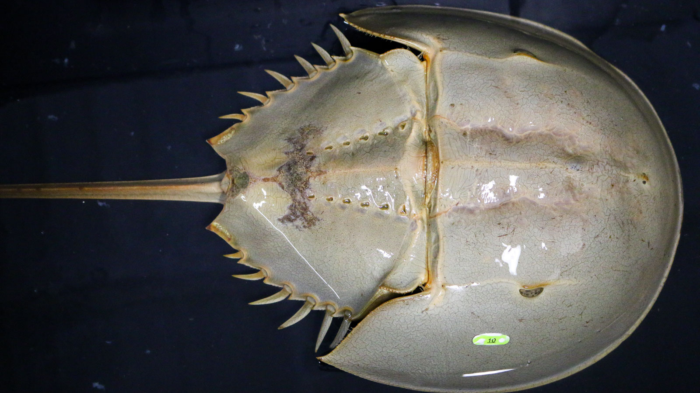

An inexpensive and fast clinical test that can save human lives and spares at-risk populations of horseshoe crabs
aperture':'5','credit':'','camera':'Canon EOS 70D','caption':'','created_timestamp':'1547431062','copyright':'','focal_length':'42','iso':'3200','shutter_speed':'0.016666666666667','title':'','orientation':'0'}' data-image-title='frontiers-marine-science-horseshoe-crab-aquaculture-sustainable-endotoxin-testing-source' data-large-file='https://frontiersinblog.files.wordpress.com/2020/03/frontiers-marine-science-horseshoe-crab-aquaculture-sustainable-endotoxin-testing-source.jpg?w=940' data-medium-file='https://frontiersinblog.files.wordpress.com/2020/03/frontiers-marine-science-horseshoe-crab-aquaculture-sustainable-endotoxin-testing-source.jpg?w=300' data-orig-file='https://frontiersinblog.files.wordpress.com/2020/03/frontiers-marine-science-horseshoe-crab-aquaculture-sustainable-endotoxin-testing-source.jpg' data-orig-size='1600,900' data-permalink='https://blog.frontiersin.org/frontiers-marine-science-horseshoe-crab-aquaculture-sustainable-endotoxin-testing-source/' sizes='(max-width: 1024px) 100vw, 1024px' src='https://frontiersinblog.files.wordpress.com/2020/03/frontiers-marine-science-horseshoe-crab-aquaculture-sustainable-endotoxin-testing-source.jpg' srcset='https://frontiersinblog.files.wordpress.com/2020/03/frontiers-marine-science-horseshoe-crab-aquaculture-sustainable-endotoxin-testing-source.jpg?w=1024 1024w, https://frontiersinblog.files.wordpress.com/2020/03/frontiers-marine-science-horseshoe-crab-aquaculture-sustainable-endotoxin-testing-source.jpg?w=150 150w, https://frontiersinblog.files.wordpress.com/2020/03/frontiers-marine-science-horseshoe-crab-aquaculture-sustainable-endotoxin-testing-source.jpg?w=300 300w, https://frontiersinblog.files.wordpress.com/2020/03/frontiers-marine-science-horseshoe-crab-aquaculture-sustainable-endotoxin-testing-source.jpg?w=768 768w, https://frontiersinblog.files.wordpress.com/2020/03/frontiers-marine-science-horseshoe-crab-aquaculture-sustainable-endotoxin-testing-source.jpg 1600w'>
Posted On: 2020-04-01T00:00:00

Content Date: 2020-04-01
Download Date: 2021-07-10
Document ID: L0C04F508